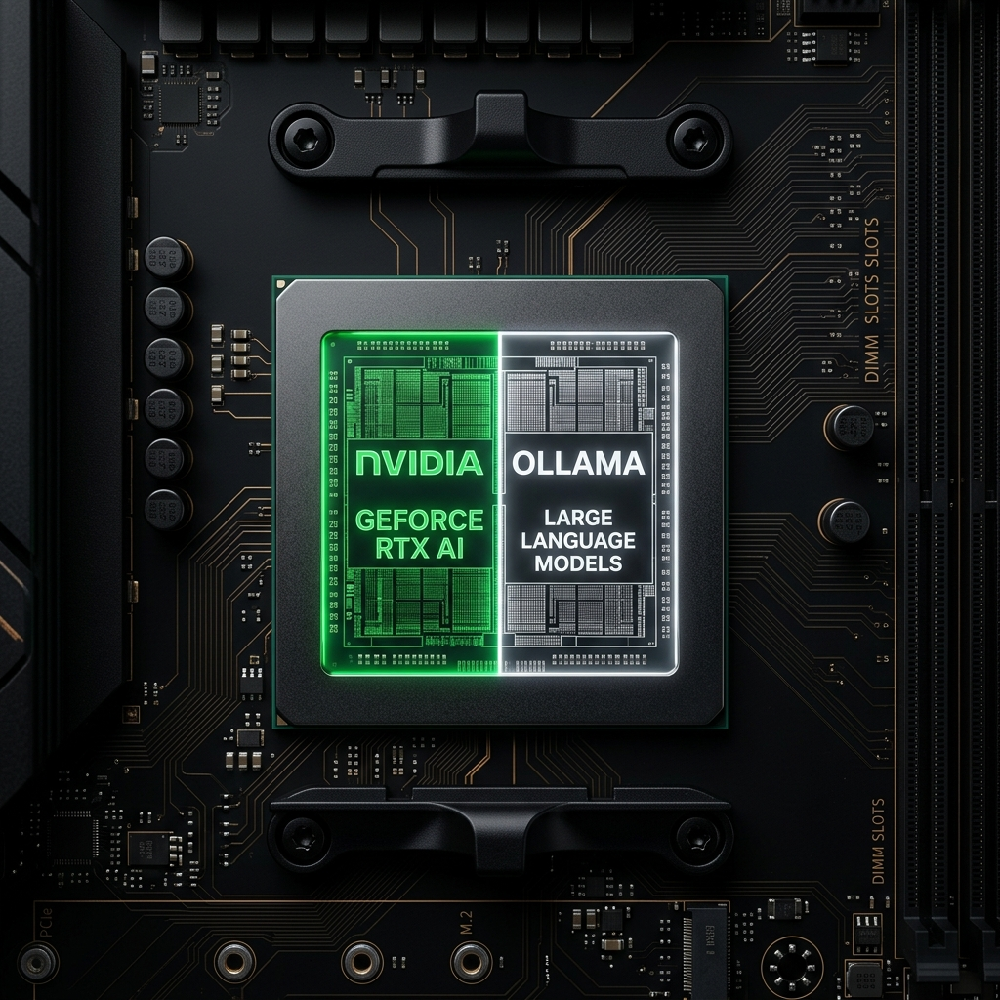

Eu não uso IA como um chatbot. Eu construí um ecossistema completo onde agentes autônomos executam tarefas reais — do planejamento estratégico ao deploy de código — enquanto eu foco no que realmente importa: pensar.
"Todo profissional que trabalha com IA hoje está no mesmo ponto que eu estava há meses — copiando e colando prompts em chats. Eu decidi ir além. Construí um sistema onde a IA não é um assistente — é um funcionário autônomo que lê documentos, escreve código, testa, corrige e entrega. Sem intermediários. Sem alucinações. Sem perda de contexto."
Esses números vêm do meu uso diário do sistema. Não são projeções — são dados reais de produtividade medidos ao longo de semanas de operação contínua.
Pontuação do motor evolutivo após 12 ciclos de auto-otimização das directivas.
Projetos entregues 3 vezes mais rápido com o pipeline Directive → Blueprint → Execution.
Directivas especializadas cobrindo desde web scraping até design de interfaces premium.
O motor evolutivo roda 100% local via Ollama/Qwen. Zero dependência de serviços pagos para a auto-otimização.
O problema fundamental das IAs atuais: elas são probabilísticas, mas a lógica de negócio é determinística. Minha solução separa intenção, decisão e execução em camadas distintas — exatamente como uma empresa organiza seus níveis hierárquicos.
O "O QUÊ" — A Intenção
São as leis do sistema. SOPs (Standard Operating Procedures) escritos em Markdown, vivendo dentro do meu Segundo Cérebro no Obsidian. Definem metas, inputs, ferramentas a usar, outputs esperados e edge-cases. Como instruções que você daria a um funcionário de nível médio — claras, sem ambiguidade.
📁 directives/scrape_website.md
📁 directives/generate_report.md
📁 directives/evolutionary_protocol.md
O "COMO" — O Cérebro
Sou eu. Ou melhor, é a IA operando como eu. O Orquestrador lê a directiva, analisa os scripts disponíveis na Layer 3, e cria o plano de execução (Blueprint). Ele é a cola entre a intenção e a ação. Não executa nada diretamente — apenas decide a rota mais eficiente e gerencia erros.
O "FAZER" — A Ação Determinística
Scripts Python puros. Sem magia, sem alucinação. Cada script tem uma única responsabilidade: um para scraping, outro para limpeza de dados, outro para gerar PDFs. Possuem tratamento de erros robusto (try/except), caching inteligente, e são extensivamente comentados com lógica de negócio em português.
⚡ execution/scrape_single_site.py
⚡ execution/evolutionary_engine.py
⚡ execution/github_sync.ps1
Se a IA faz tudo sozinha, os erros se acumulam exponencialmente: 90% de precisão por passo = apenas 59% de sucesso após 5 passos. A solução? Empurrar a complexidade para código determinístico. Assim, a IA foca apenas no que é boa: tomar decisões.
Nem tudo precisa de um modelo de 405 bilhões de parâmetros. O segredo é saber quando usar o canhão e quando usar o bisturi. O sistema roteia automaticamente cada tarefa para o modelo mais eficiente.
via NVIDIA NIM / API
via Ollama (100% offline)

Cada skill é uma directiva especializada que transforma o agente generalista em um expert de domínio. É como ter 47 funcionários diferentes, cada um treinado para uma tarefa específica, disponíveis 24/7.
Extração inteligente de dados de qualquer site, com caching e rate-limiting integrados.
Interface premium Apple-inspired com glassmorphism, dark mode e micro-animações.
Auto-melhoria contínua via algoritmos genéticos. O sistema se otimiza sozinho.
Processamento de datasets, geração de relatórios visuais e insights automatizados.
Conexão com qualquer serviço externo — GitHub, Notion, Obsidian, NotebookLM, n8n.
Self-annealing: quando algo quebra, o sistema lê o erro, corrige e aprende para o futuro.
Produção de textos, blog posts e documentação técnica com tom profissional calibrado.
Pipeline completo: lint → test → build → push para GitHub → deploy automático.
Todo o conhecimento do Agentic OS é armazenado no Obsidian — um vault local, versionado pelo Git, sincronizado com o GitHub. Não é apenas um bloco de notas: é um sistema de memória ativa onde cada decisão técnica, cada lição aprendida e cada resultado de otimização é registrado e indexado.
Quando o agente recebe uma tarefa nova, ele primeiro consulta o Context Map do projeto. Isso garante que ele nunca repita erros já documentados e sempre siga os padrões arquiteturais já estabelecidos. É a diferença entre um funcionário novo e um veterano com anos de experiência.
Mapas de contexto por projeto com histórico de decisões técnicas.
Registros automáticos de cada execução do motor evolutivo.
Versionamento automático via github_sync.ps1 — backup + histórico.
Inspirado em Programação Evolutiva (EP), este protocolo não espera comandos. Ele autonomamente analisa as directivas atuais, gera mutações, testa cada variante contra métricas de fitness, e promove a versão mais forte. É evolução natural — aplicada a software.
O motor identifica as directivas com menor eficiência nos últimos ciclos.
Gera N variantes da directiva original com alterações controladas via LLM local.
Cada mutação é avaliada por clareza, completude e alinhamento com as Regras GEMINI.md.
Se fitness > parent, a nova versão substitui a anterior. O sistema ficou mais forte.
O ciclo recomeça. Cada iteração reduz erros e aumenta a confiabilidade do sistema.
Quando algo quebra, o sistema fica mais forte.
Erros não são falhas — são dados de treinamento. O ciclo de auto-cura funciona assim:
O GEMINI.md é a constituição do sistema. 21 regras operacionais que garantem que a IA nunca alucine, nunca gaste recursos sem permissão, e sempre documente o que faz.
Proibido inventar dados, links ou fatos. Se não encontrar fonte confiável, diz "Não encontrado".
Antes de consumir API paga, deve apresentar estimativa e pedir "Sim ou Não" explícito.
Toda chamada a LLM usa o utilitário api_retry.py — 5 tentativas, delay crescente, filtro 429/503.
Para tarefas com +3 passos, gerar Blueprint antes. Sem código antes da aprovação.
Após aprovação do Blueprint, execução contínua sem confirmações. Máxima eficiência.
Após cada implementação, atualizar o Context Map com "Histórico de Decisões" e "Novas Lições".